華人ネットワークの経済力は民族性では説明できない。国家が契約と治安を執行できない空白で、同郷・宗族の信用と仲介がその執行を代替したことが出発点である。合法の財閥は執行が強まった後も国家と結合して残り、制裁・起訴された詐欺拠点は執行の弱い国境へ移った。本稿は発注者の9問に順に答え、その事実を2つの主張に当てて判定する。
読者と判断：相手を「華人ネットワーク」一括で見るか、信用・許認可・議決権・制裁リスクで案件ごとに分けるかを決められる。
分解：物理的制約は土地・販路・国境治安が現地に固定されること。お金の流れは合弁出資・配当・ディーラー手数料・地下送金である。利得の帰属は財閥・開発主体・政府・宗親会・犯罪組織に分かれる。法と強制力はNEP・外貨規制・特区の空白・制裁である。時間は排斥後の資本形態の変化と合弁の継続である。
本稿では次の定義を使う。混同すると人口と企業支配の議論が崩れる。
| 用語 | 本稿での意味 |
|---|---|
| 華僑 | 中国籍で国外に居住する者 |
| 華人 | 居住国の国籍を持つ、または居住国社会に定着した中国系住民 |
| 華裔 | 中国系の祖先を持つ者。国籍・言語・自己認識を限定しない |
| 新移民 | 改革開放後を中心に中国本土から移住した人々 |
| 華人企業 | 所有者・創業者・支配株主が華人または華裔である企業。現時点の支配株主を別途確認する |
人口定義は countries/singapore.html と countries/malaysia.html と接続する。シンガポール居住者の華人系はCensus 2020で74.3%、マレーシア自国民ベースはDOSM 2024で22.4%、インドネシアはBPS 2010の自己申告で1.2%である1,2,4。
移民は一回ではない。明清期の南洋移民と19世紀の苦力貿易がある。1949年以後の再移民と改革開放後の新移民が重なっている5,7。
| 時期 | 主な移動 | 経済的役割 |
|---|---|---|
| 明清期 | 福建・広東・潮州・海南から南洋の港市へ | 商業・海運・農業・鉱山 |
| 19世紀 | 苦力貿易、鉱山・鉄道・農園労働 | 錫鉱・金鉱・港湾・農園 |
| 1949年以後 | 中国内戦・政変に伴う香港、台湾、東南アジアへの再移民 | 商業・教育・専門職・政治亡命 |
| 改革開放後 | 商人・学生・技術者・企業関係者 | 不動産・製造・金融・越境貿易・IT |
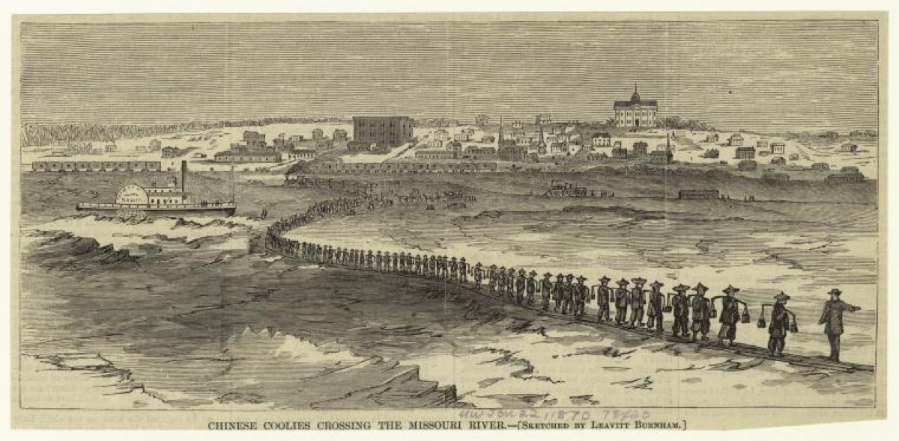
福建系はシンガポールとマレーシア、インドネシア、フィリピンに広く分布する。潮州系はタイとカンボジア、ラオスに多い。ベトナムでは広東系の比重が大きいとする整理がある5。シンガポールでは福建系・潮州系は商業に集中する。広東系・客家系は職人・建設・鉱山、海南系は飲食・ホテルへの集中が報告されている36。
| 集団 | 出身地域 | 典型的な分布・職業 |
|---|---|---|
| 福建・閩南 | 福建南部 | 港市商業・貿易・農業・金融 |
| 潮州 | 広東東部 | タイ・カンボジア・ラオスの商業、米・食品流通 |
| 広東 | 広東珠江デルタ | 手工業、鉱山、都市サービス |
| 客家 | 広東東北部・福建西部 | 鉱山・金属加工・手工業・内陸開拓 |
| 海南 | 海南島 | 飲食、ホテル、サービス業 |
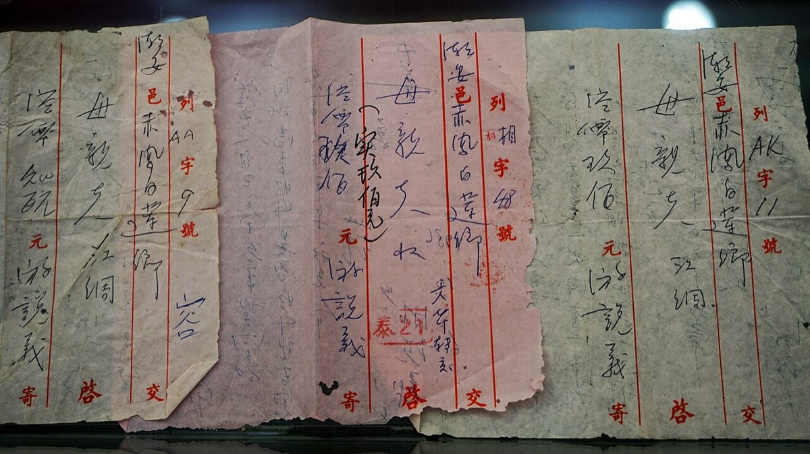
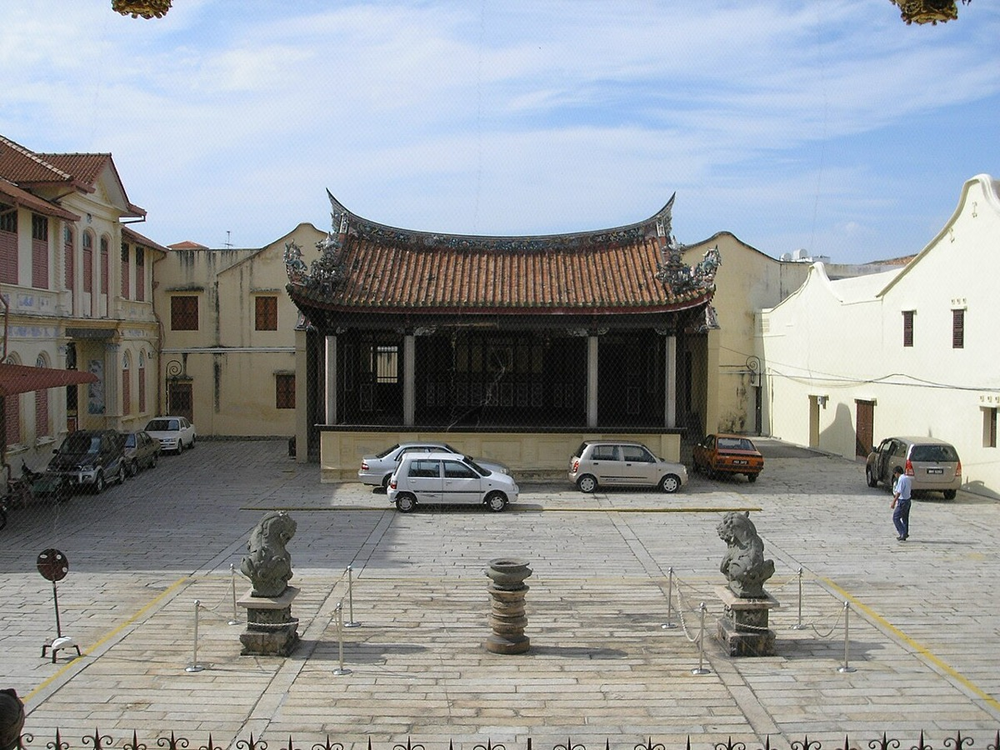
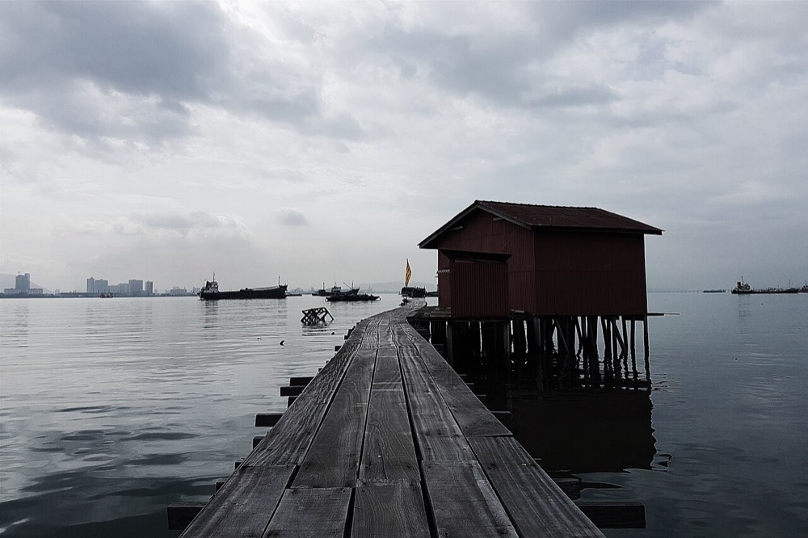
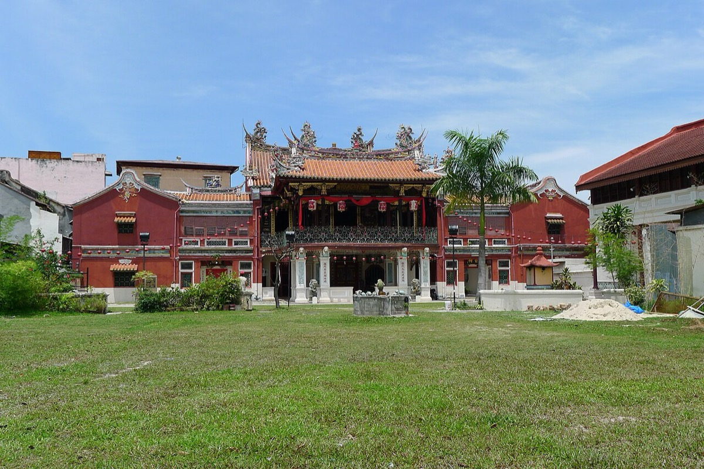
排斥は資本を消滅させず、形を変えた。インドネシアでは1965年以後、中国語教育や団体活動の制限と、企業の現地名義化・政治仲介への依存が進んだ。マレーシアでは1969年5月13日の民族暴動の後、1970年からNEP（新経済政策）が始まり、ブミプトラ優遇が株式・契約・教育の配分を制度化した。NEPは中国系資本を全面消滅させる政策というより、国家による配分を通じてマレー系資本を増やす政策だったとする研究がある7,38。
| 事例 | 政策・事件 | 資本への影響 |
|---|---|---|
| インドネシア、1965年以後 | 同化政策、反華人暴力 | 現地名義化、政治仲介への依存 |
| マレーシア、1969年→NEP | ブミプトラ優遇 | 株式・契約・教育配分の制度化 |
| シンガポール、1965年独立 | 対中関係の慎重管理 | 華人住民の国民化、民族団体の国家管理 |
| ベトナム | 戦争・社会主義化 | 香港・台湾・東南アジアへの再移民 |
2018年の機構改革で、国務院僑務弁公室は中央統一戦線工作部へ統合された（確定）8。海外華人団体との連絡と華文教育がある。文化交流と帰僑・僑眷政策も、党の統戦システムに近づいたことを意味する。
| 組織・制度 | 主な手段 | 利得 | 確度 |
|---|---|---|---|
| 中国政府・統戦部 | 商会・同郷会・宗親会・文化交流・顕彰 | 対外支持、投資・人材・情報の動員 | 確定（機構改革） |
| 世界華商大会 | 経営者会議、投資・人脈形成 | 中国・居住国双方への市場アクセス | 有力 |
| 中華総商会 | 商談、政府との連絡、政策要望 | 規制情報、取引相手の信用確認 | 有力 |
| 宗親会・同郷会 | 冠婚葬祭・教育・融資・紹介 | 相互扶助、雇用、資金調達 | 有力 |
| 新移民ネットワーク | 微信、海外同郷会、留学生会 | 中国本土との情報・資金接続 | 有力 |
中国政府が海外華人を一括して統制しているという命題は未確認である。団体ごとの規約と資金源、指導者、実際の政治活動を個別に見る25。
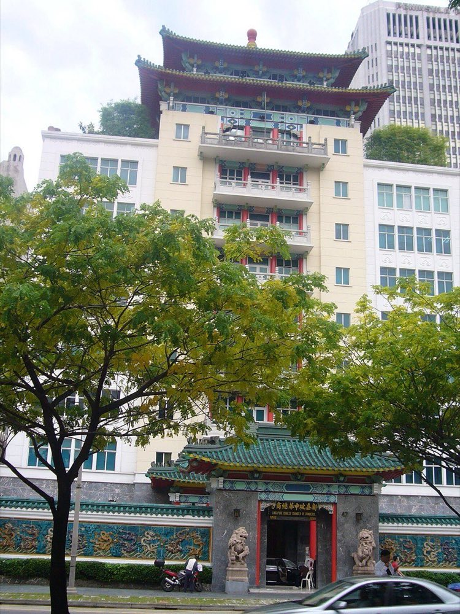
華人・華裔企業は国家企業そのものより、合弁相手や土地・許認可の仲介として参加する事例が多い。流通網、工業団地運営、現地資本の提供者としても現れる9,11。
| 案件 | 出資構成 | 華人・華裔企業の役割 | 確度 |
|---|---|---|---|
| Forest City（マレーシア） | Country Garden 60%、Johor側 Esplanade Danga 88 40% | 中国民営企業が開発・資金・販売、現地側が土地・政治的接続 | 確定（企業・報道） |
| MCKIP（マレーシア） | マレーシア側51%、中国側49%。中国側49%の95%を広西北部湾国際港、5%を欽州投資公司 | 工業団地、港湾、鉄鋼・物流の合弁 | 確定（事業資料） |
| モロワリ工業団地（インドネシア） | 中国企業・インドネシア企業の合弁。最終所有比率は事業会社・時点により異なる | ニッケル鉱山・製錬・輸出物流・現地許認可の接続 | 有力。単一の最新比率は未確認 |
| CP–Toyota（タイ） | 固定出資JVではない。協力枠組み | 現地物流・バイオガスと日本技術の接続 | 確定（Toyota発表） |
Forest CityはCountry Gardenが60%、Johor側が40%を保有する合弁である11。MCKIPは中国側49%、マレーシア側51%で、中国側の大半を広西北部湾国際港が占める9,10。モロワリについて、華人企業・中国国有企業・インドネシア企業の関与は学術研究で確認できる。出資比率は会社・鉱区・事業段階で異なるため、単一比率としては未確認である39。
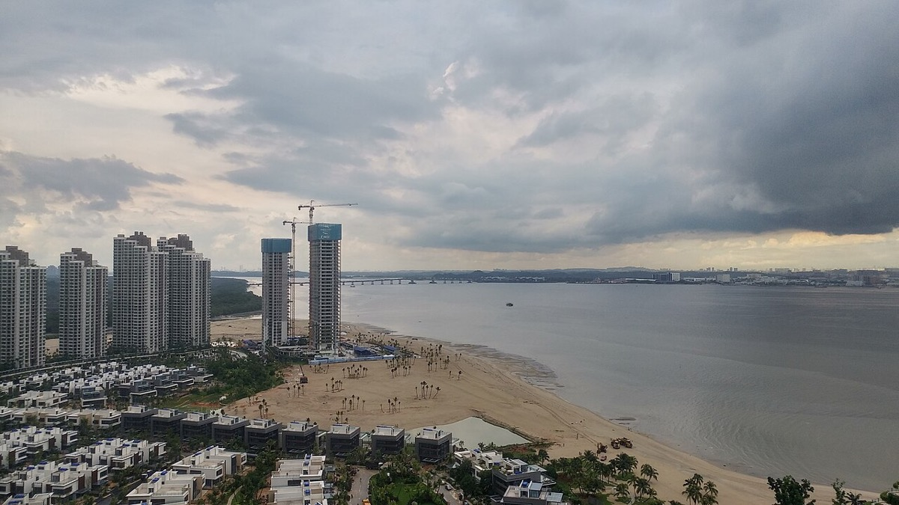
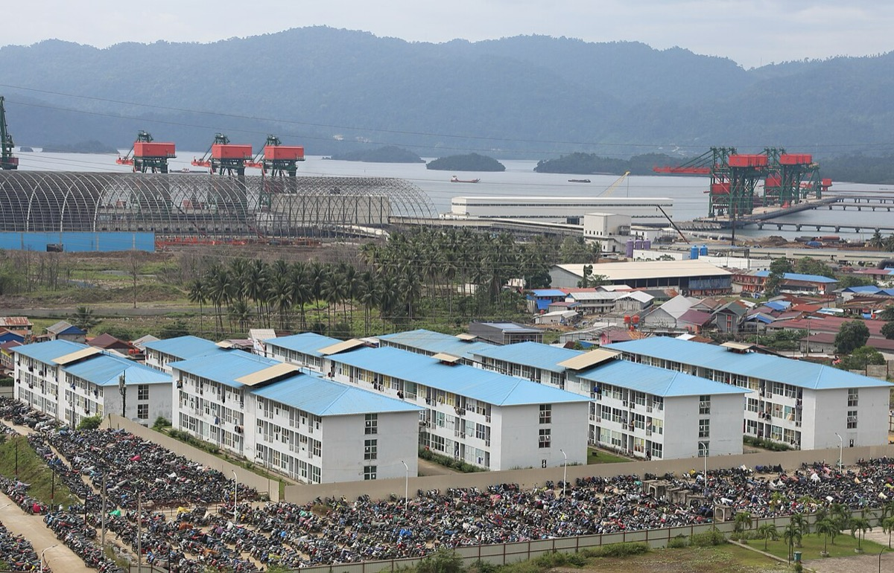
国境地帯と特区には、中国語圏出身者を含む犯罪組織と武装勢力が関与する事例がある。現地政治・治安機関と地下金融も関与する。これは華人社会一般の行為ではない。資本・保護・被害の流れを分けて記録する。
| 地域 | 資本・運営 | 保護・空間 | 被害 | 確度 |
|---|---|---|---|---|
| ミャンマーKK園区・果敢 | 中国語圏の犯罪組織、現地事業者、地下金融。果敢では白家等の家族系が報道・制裁資料で指摘 | ミャワディ周辺の武装勢力、国境の統治空白 | 強制労働者、詐欺被害者 | 有力 |
| カンボジアPrince Group | 陳志が率いると米司法省が起訴（2025-10-14） | カジノ・不動産・金融・政治的接続 | 強制労働者、投資詐欺被害者 | 確定（起訴・制裁）。起訴≠有罪 |
| ラオス金三角経済特区 | 趙偉TCO、Kings Romans Casino | 特区制度、国境・カジノ | 薬物・人身売買・詐欺の被害者 | 確定（2018指定） |
| フィリピンPOGO | 事業者と犯罪シンジケート | ライセンス、地方政治 | 労働者、詐欺被害者 | 有力（最高裁記録あり） |
米財務省は2018年1月30日に趙偉TCOを指定した（確定）17。米司法省は2025年10月14日に陳志を、カンボジアの強制労働型詐欺拠点の運営などで起訴した。これは起訴内容であり、有罪判決ではない（確定：起訴記録）18,19。UNODCは東南アジアの組織犯罪の収束を報告する（有力）22。フィリピン最高裁は、POGOをめぐる議会調査が人身売買・違法拘禁・拷問・サイバー詐欺を対象にしたと記録する（確定）23。
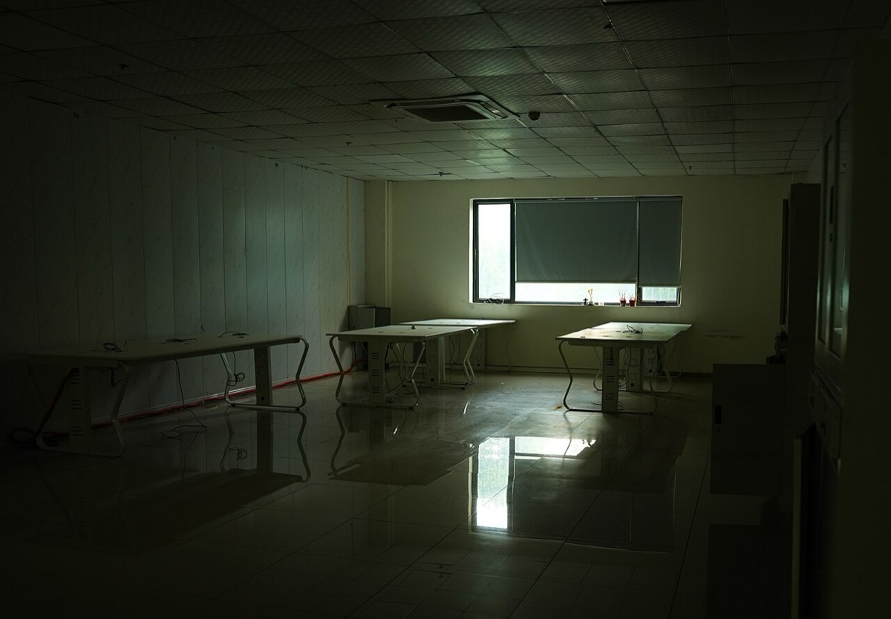
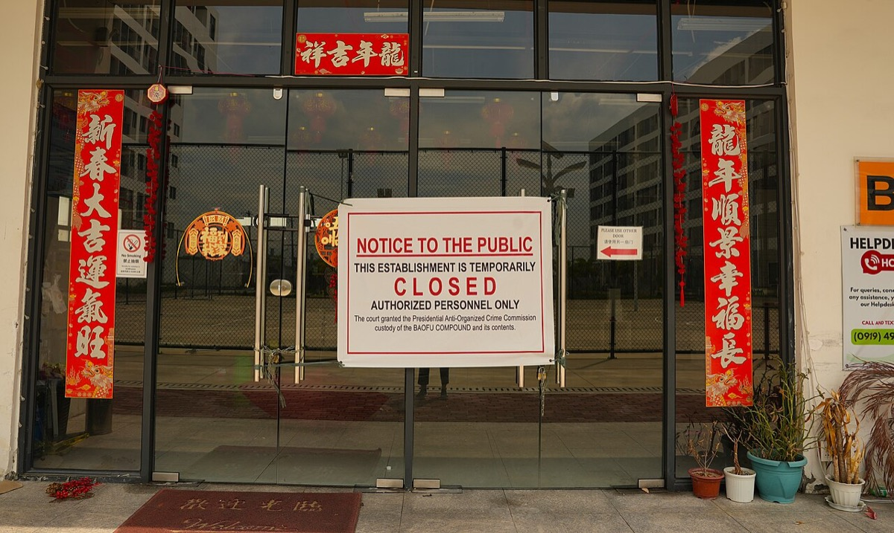
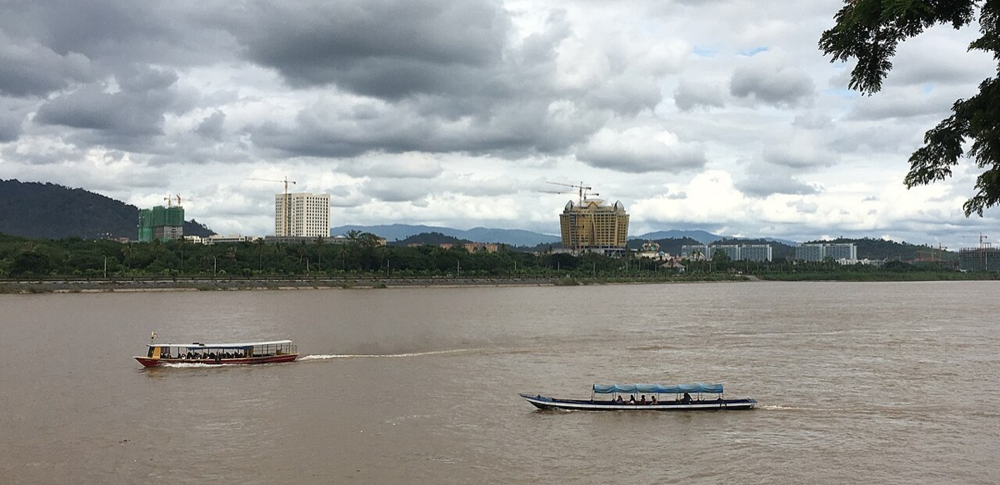
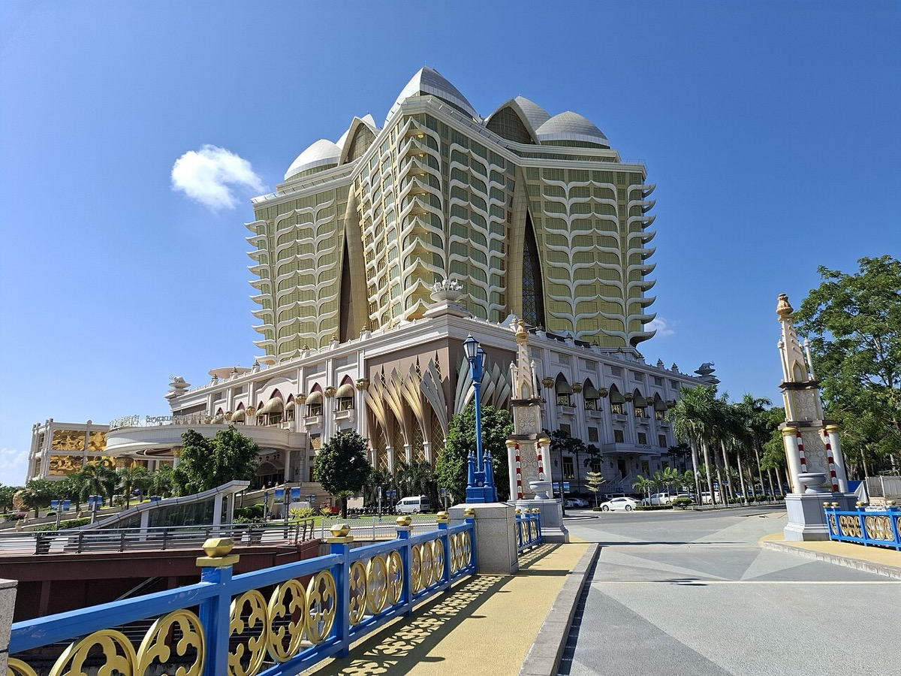
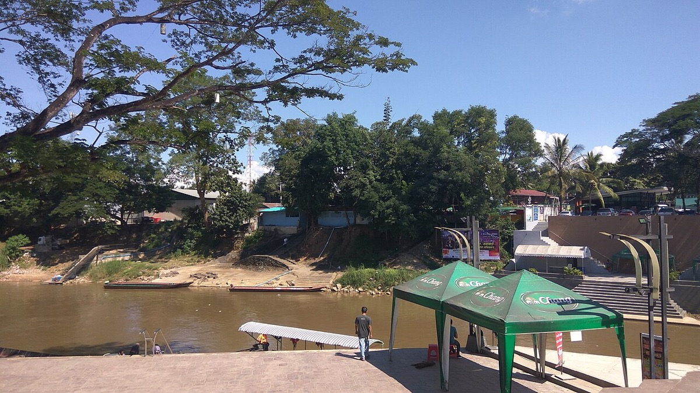
勤勉さだけでは説明できない。信用を同郷・宗族ネットワークで補い、植民地期の徴税・専売・流通仲介を担った。政治権力との接続、資本規制の裁定、家族経営と相続を組み合わせた結果である7,36。
| 要因 | 機能 | 具体例 |
|---|---|---|
| 信用 | 同郷・宗族が保証人、紹介者、情報源になる | 小口融資・雇用・仕入れ・僑批 |
| 仲介者の地位 | 植民地政府と現地社会の間をつなぐ | 税徴収・専売・港湾・流通 |
| 政治との結合 | 許認可・独占・公共契約へのアクセス | インドネシアのスハルト期のチュコン（cukong） |
| 規制裁定 | 国籍・登記・居住地・通貨の差を利用 | 香港・シンガポール・マレーシアの法人・金融機能 |
| 家族経営 | 内部再投資と相続が容易 | 非上場企業、持株会社 |
| 事業分散 | 政治危機・暴力・規制変更への保険 | 不動産・銀行・食品・物流への分散 |
スハルト期のチュコンは、国家の許認可と独占を仲介する政商である。民族性そのものではなく、政治との結合が利得の源泉だった。マレーシア企業株式の華人系保有は2018年に26.3%（額面、学術引用、single-source）である6。1991年調査としてAmy Chuaが引用する「インドネシア上場株式の73%」は二次引用であり、現行の一次統計ではない（disputed）28。
| グループ／旗艦 | 本拠 | 起源と現支配 | 規模（2024） |
|---|---|---|---|
| Wilmar International | シンガポール | クオック家の農産・油脂 | 売上 673.8億ドル |
| Charoen Pokphand Foods | タイ | 潮州系 Chearavanont | 売上 5,807億バーツ |
| PT Astra International | インドネシア | 創業はSoeryadjaya。現支配はJCC 50.11% | 売上 330.92兆ルピア（約207億ドル） |
| Indofood（Salim） | インドネシア | Salim 家 | 売上 115.79兆ルピア |
| SM Investments（Sy） | フィリピン | Sy 家 | 売上 6,548億ペソ |
Astraの創業は華人系だが、現支配株主はJardine Cycle & Carriageである12。創業起源と現支配は分けて記録する。
個人の外貨購入には年間5万ドル相当の便利化枠がある。これは通常の便利化枠であり、資産移転総額の絶対上限と同一ではない。用途証明・企業投資・金融機関経由の制度を区別する20,40。
| 制度・時点 | 数値・内容 | 含意 |
|---|---|---|
| 個人外貨枠 | 年間5万ドル相当 | 通常の便利化枠。実需・証憑があれば別枠手続き |
| 2015年 | 純資本流出6,474億ドル（647.4 billionドル）、GDP比6.2% | 元安・外貨準備減少・資本規制強化 |
| 2016年 | 純資本流出6,397億ドル（639.7 billionドル）、GDP比5.7% | 資本移動監視の強化 |
| QDII | 認可金融機関を通じた海外証券投資制度 | 個人の直接投資ではなく、制度化された迂回路 |
| シンガポール13O | 指定投資2,000万シンガポールドル以上 | ファミリーオフィス誘致 |
| シンガポール13U | 指定投資5,000万シンガポールドル以上 | 大規模資産の管理拠点 |
IMF（2017/247）の整理では、2015年の純資本流出は647.4 billionドル（6,474億ドル）、2016年は639.7 billionドル（6,397億ドル）である20。シンガポールのファミリーオフィス税制優遇は、13Oが指定投資2,000万シンガポールドル以上、13Uが5,000万シンガポールドル以上である21。香港にもファミリーオフィス誘致の制度がある。制度経路と制度外経路の比率は未計測である。共同富裕以後に華人資本が一律に海外へ移動したという量的命題も未確認である。
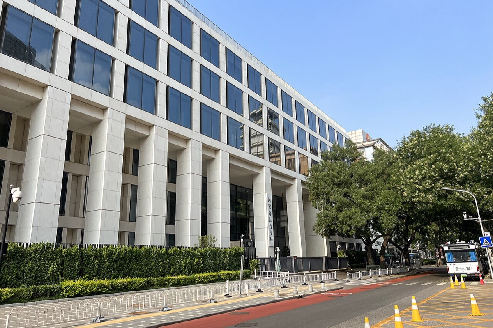
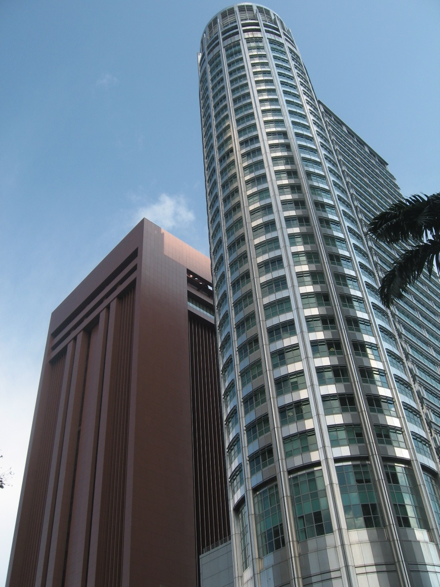
「束ねる」主体は一つではない。誰が何を提供し、双方が何を得るかを表にする。
| 束ねる主体 | 手段 | 束ねる側の利得 | 束ねられる側の利得 |
|---|---|---|---|
| 中国政府 | 統戦部・僑務・商会・表彰・文化交流 | 投資・人材・対外支持・情報 | 中国市場、政策窓口、名誉 |
| 居住国政府 | 国籍・許認可・NEP・投資優遇 | 税収、雇用、政治的安定 | 法的地位、契約、公共事業 |
| 財閥 | 持株会社、銀行、サプライチェーン | 市場支配、資本効率 | 雇用、融資、販路 |
| 宗親会・同郷会 | 紹介・儀礼・教育・相互扶助 | 会員基盤、政治的発言力 | 信用、保険、就職 |
| 犯罪組織 | 暴力・監禁・賄賂・地下金融 | 高収益、司法回避 | 労働者には利益ではなく被害 |
日本企業が関係を作る条件は次である。①実質所有者の確認。②制裁・マネーロンダリング審査。③議決権と拒否権の明文化。④現地許認可の透明化。⑤労働者保護。⑥撤退条項。民族ラベルは契約変数ではない。
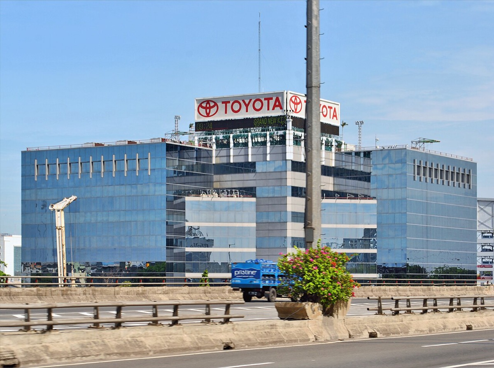
法文、統戦、個別の起訴を分けて確度を付ける。集団全体を諜報網とみなす根拠はない。
| 命題 | 証拠 | 確度 |
|---|---|---|
| 国家情報法第7条が組織・公民に支持・協力・秘密保持を求める | 法文 | 確定 |
| 統戦部が海外華人団体と接触する | 2018年改革、USCC・政府資料 | 確定 |
| 海外警察拠点が国外で圧力活動を行った | Safeguard Defenders報告、米NY起訴 | 有力〜確定（事案ごと） |
| 華人社会一般が中国の諜報網である | 集団全体を裏付ける公的証拠なし | 未確認 |
| 特定団体・個人が情報収集に関与した | 個別起訴・制裁の範囲 | 事案ごとに確定または有力 |
Safeguard Defendersは2022年、海外警察拠点が帰国説得・監視・圧力に使われたと報告した（有力）15。米司法省はニューヨークで、中国公安関係者のために未登録の海外警察拠点を運営したとして2人を逮捕した（確定）16。統戦活動は影響工作・動員・対外広報を含むが、全てが諜報活動ではない。政治的連絡と経済外交、情報収集、強制的な越境弾圧を分けて分析する25。
上海青幇と香港の三合会は、華人社会と重なる地域・言語圏を持つが、犯罪組織であり華人社会全体ではない。
| 組織・人物 | 活動 | 国家・政治との関係 | 確度 |
|---|---|---|---|
| 上海青幇（黄金栄・杜月笙） | 阿片・賭博・港湾・労働統制 | フランス租界当局との利益分配、1927年の蒋介石反共クーデターへの協力 | 有力（学術研究） |
| 14K | 薬物・賭博・恐喝・人身売買 | 尹国駒が関連団体を通じて活動したと米財務省が記録 | 確定（制裁） |
| 新義安 | 香港・海外の犯罪活動 | 個別構成員・地域ごとに異なる | 有力 |
| 和勝和 | 香港の三合会 | 日本との直接的組織関係は未確認 | 未確認 |
| 尹国駒・世界洪門歴史文化協会 | カンボジア、パラオ、投資・文化団体 | 米財務省が2020年に関連団体を制裁 | 確定 |
| 日本の暴力団との接点 | 個別事件・密輸・詐欺での接触はあり得る | 華人社会全体との組織関係は未確認 | 事案ごと |
青幇について、研究は次を示す。黄金栄・杜月笙らが上海の阿片取引を支配した。フランス租界当局と利益を分けた。1927年には蒋介石の反共クーデターに協力した（有力）29,30。米財務省は2020年12月9日、尹国駒を14Kの指導者として指定した。カンボジアの世界洪門歴史文化協会、香港のDongmei Group、パラオの華人洪門文化協会を関連団体として制裁した（確定）24。日本の警察白書は暴力団を別分類で扱う。匿名・流動型犯罪グループと来日外国人犯罪も別分類である。三合会と指定暴力団の恒常的な共同組織関係を確認できる公的記述は、本調査では未確認である31。
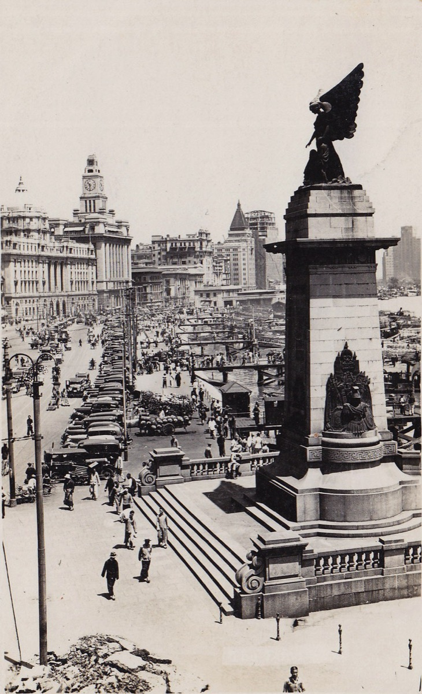
9問の事実を、冒頭の主張1・2に当てる。
歴史（②）は、植民地期の徴税請負と排斥後の政治仲介を示す。スハルト期のチュコンも、国家の執行空白に立地した。富裕化（⑥）の説明は信用・仲介・政商結合である。詐欺集団（⑤）と青幇・三合会（⑩）も空白に立地する。現行の合法本社はシンガポール等の執行側に残り、制裁・起訴された詐欺拠点はミャンマー・カンボジア・ラオスの空白側にある。
| 対象 | 類型 | 武装保護／特区空白 | 契約執行（日・国平均） | WGI法の支配（2023） |
|---|---|---|---|---|
| Wilmar本社（SG） | 合法 | 公的記録で確認できず | 164 | +1.45 |
| SGファミリーオフィス制度 | 合法 | 公的記録で確認できず | 164 | +1.45 |
| 趙偉TCO（ラオスGTSEZ） | 違法（指定） | 有り（確定） | 828 | -0.82 |
| 陳志／Prince Group（起訴） | 違法（起訴） | 有り（起訴側主張） | 483 | -1.07 |
| ミャンマーKK・果敢 | 違法（有力） | 有り（有力） | 1,160 | -1.70 |
契約執行の日数はWorld Bank Doing Business 2020の国平均である。拠点固有の紛争解決日数ではない37。WGIは2023年である32。
観察できるのは次の2点である。合法本社群と詐欺拠点群の立地は記述的に分かれる。「同じ空白に立ち、合法性だけが違う」通説とは整合しない。しかし「信用が執行を代替した」因果は、移民・僑批・同郷会の説明と国平均指標だけでは測れない。信用ネットワークの強度と執行能力の比較測定が無い。契約執行は国平均であり、拠点固有の因果を示さない。主張1の判定は判定不能である。
Toyota–Astraは1971年から続く。2003年に製造と流通を分離した。流通は現地側と日本側の50対50、製造は日本側95%である（確定：当事者発表）35。公表資料は販路と国産化と議決権の役割分担を示す。創業起源の華人系ラベルを契約条件として示さない。現支配はJCC 50.11%である12。ただし、公表資料に民族条件が無いことと、提携相手の選択変数が民族カテゴリではないことは同値ではない。実際の選定過程、許認可の付与、拒否権の運用は本稿では未検証である。主張2はAstra一件に限定しても、判定は判定不能である。
本ページは公開統計・企業開示・制裁／起訴記録の整理である。投資助言ではない。起訴は有罪と区別する。特定の民族を犯罪と結び付けない。


.jpg){kind=link}
.jpg){kind=link}


.jpg){kind=link}